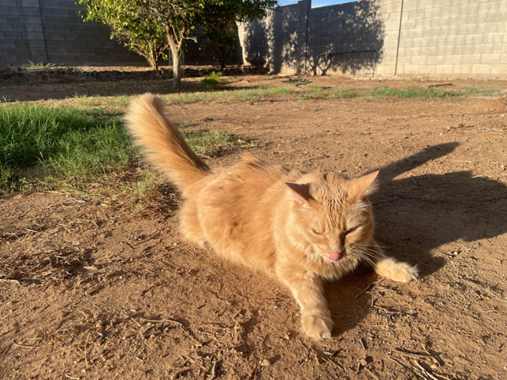

Cats: The Best Pets
I am always taken by surprise when I learn that someone doesn't like cats. And I am even more shocked to hear there are people who absolutely despise cats! And maybe you are someone on the fence about cats, so hopefully with some more exposure, and by reading this blog, you just might start to warm up to the wonderful world of house cats!
Even before I was born, my Mom had a cat named Harley, and so I was brought into this world in a home also inhabited by a cat. As a baby, I would often chase after poor Harley in my baby walker and grab at her tale. One day, I even asked why the bottom side of the tomato "looks like Harley's butt!" So I can certainly say from experience that cats are suitable for families, including young babies who try and terrorize them! Cats are enduring creatures and will put up with a lot, though they might show their annoyance every now and then with a hiss and a swipe.
This is not to say that dogs, or other house pets are no good, but cats are just simply superior. I think cats even know how superior they are. Yes, I have owned a few dogs in my life, and I believe that they would also attest to cats being at the top of the metaphorical "house pet food-chain." My most adored dog, Desmond, who was a pitbull rottweiler mix, weighing a whopping 130 pounds, would always submit to our cats. It was almost comical watching Desmond cower when one of our cats put him in his place if he got out of line. And by getting out of line, I mean unknowingly standing in the way of the cat or perhaps snuggling too hard for the cat's liking. In my opinion, most dogs are pretty similar in their wants/needs-- they just want to serve as a companion and want your love and attention in return. And also food scraps of course! Whereas, there is actually quite the variation from cat to cat and they each have their own unique personality.
Some cats prove to be just as needy and attention seeking as dogs, whereas other cats could care less about your presence, unless they want something on their terms. One of my cats, Tarot, works like clockwork! In the evening, she will come to mount me on the sofa for her nightly pets. Tarot's petting sessions only last about 20 minutes at most. When Tarot notices that everyone is done with work, she will request her afternoon stroll through the backyard, where she enjoys rolling on the concrete and dirt and sniffs all the outdoor smells. On the other hand, one of our other cats, Jade, will literally cry like a child if you leave the room without notifying her. Jade is also very possessive, so if another cat decides to seek out your attention, Jade will prey on the unassuming cat, just as a lion hunts for its meal in the safari. But in the end, if we must leave the house, even for a day trip, we are comfortable leaving our cats at home, supplied with food, water and toys. Yes, we have been welcomed by cat yak (on the carpet, not the tile of course) or a scratch on the upholstery, but nothing to the effect of eaten shoes or furniture like a dog might do. As long as your cat(s) have food, water, a clean cat box to go potty, items to stimulate them (like catnip toys or a scratching post) a comfy nest to sleep, preferably under direct sunlight and the occasional attention (on their terms only) they are pretty content.
I mean, there must be a reason why the Egyptians thought of cats as deities, right?! If you haven't been convinced yet, let me give you my elevator pitch: Cats are unique, they have their own personalities, cats are (for the most part) pretty tolerable creatures, cats do not need constant supervision or attention, cats are pretty clean and don't drool and slobber everywhere, cats are almost automatically inclined to use a litter box (very little potty training needed), cats require very few essentials to be happy. Cats also supply loads of entertainment for us humans-- just google all the pictures of cats laying on glass tables and you will understand! In short, I will, and have always been, a cat lover and truly believe that they are THE BEST pets one could own!